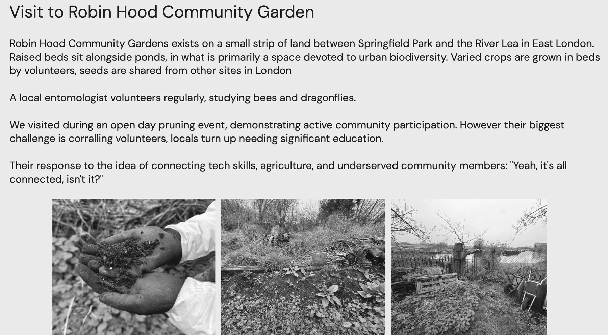
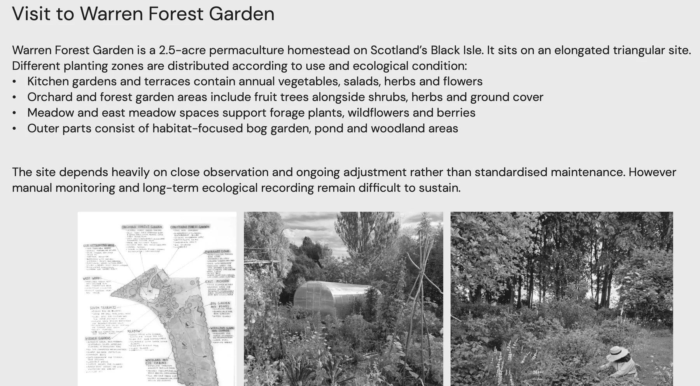
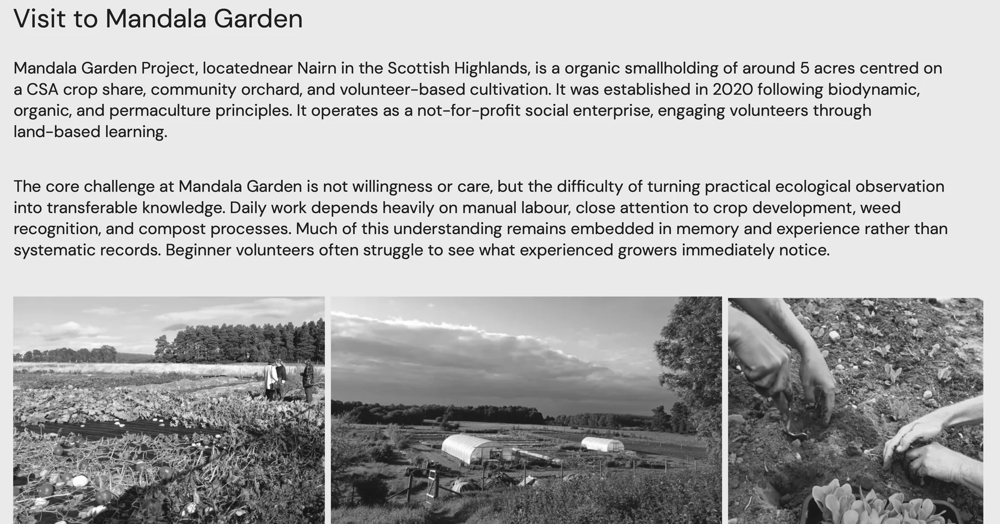
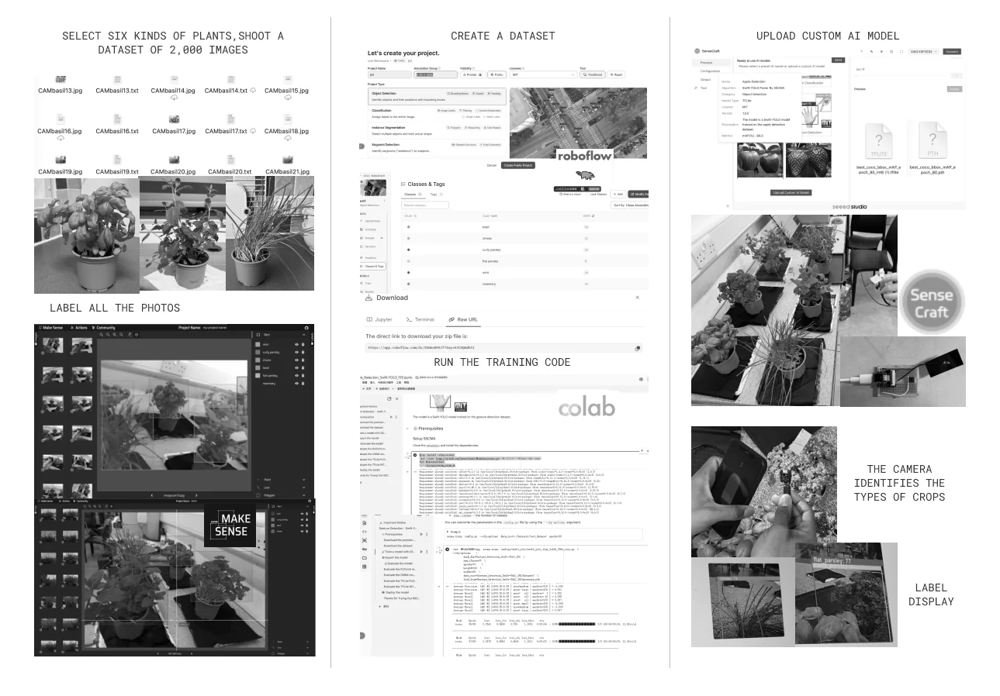
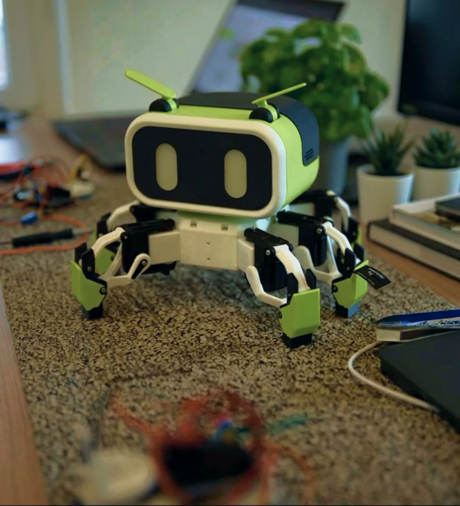

ROBIN connects computer vision, conversational intelligence and mobile robotics to help growers observe their environment, understand plant conditions and turn insight into a clear next action—while building a more emotional relationship with everyday growing.
Robot prototype · AI service architecture · CV model · Conversational agent · Interactive app
02
OPPORTUNITY & PRODUCT SYSTEM
Designing for practical attention.
Field visits revealed that growing knowledge is rarely missing—it is difficult to notice, interpret and pass on at the right moment. ROBIN turns situated observation into a shared, actionable loop instead of replacing the grower’s judgement.
“It’s just about observing and watching.”

01 / Robin Hood Community Garden

02 / Warren Forest Garden

03 / Mandala Garden
OBSERVE→UNDERSTAND→DECIDE→ACT→LEARN
ONE PRODUCT, THREE CONNECTED LAYERS
Intelligence becomes useful only when perception, reasoning and action stay connected.
The robot was developed as a working sensing platform rather than a sculptural shell. Its six-legged structure negotiates uneven growing environments; a modular head combines vision, voice and expressive feedback; replaceable end-effectors keep future care tasks open.
The six-legged structure is not a stylistic gesture—it is the physical premise for reliable observation in irregular growing spaces.
A custom YOLOv8 pipeline was trained on 2,000 labelled images across six plant classes, then deployed through embedded vision hardware. The model gives ROBIN a grounded view of what is actually in front of it—so the service begins with evidence, not a generic prompt.

DATA → TRAIN → DEPLOY → IDENTIFY
02 / CONVERSATIONAL AI
Turn recognition into a next step.
The dialogue layer combines visual context with an explicitly designed role, tone and response structure. ROBIN explains what it sees in accessible language, asks for missing context and proposes one actionable step—keeping the grower in control instead of performing certainty.
CONTEXT → DIALOGUE → ACTION05
APP
A continuous view of the growing relationship.
The app extends a brief robot encounter into an ongoing service. It preserves observations, makes plant status legible and connects AI suggestions to follow-up actions—so each interaction contributes to a growing record rather than disappearing after one answer.
I led ROBIN from opportunity framing to an integrated working prototype, translating between product intent, AI behaviour, hardware constraints and team execution.
Framed the product opportunity from field research across community and domestic growing contexts.
Defined the Robot–AI Service–App architecture and the end-to-end interaction loop.
Led robot prototyping and coordinated form, mechanism, electronics and embedded intelligence.
Built and deployed the computer-vision workflow from data collection to on-device recognition.
Created reusable AI interaction principles, capability maps and evaluation assets for future iterations.

INTEGRATED WORKING PROTOTYPE / 2026
The value of an AI-native product is not how many models it contains, but how clearly intelligence becomes observable, actionable and improvable across the whole system.
DETAILED DOCUMENTATION
Product logic, implementation and reusable design assets